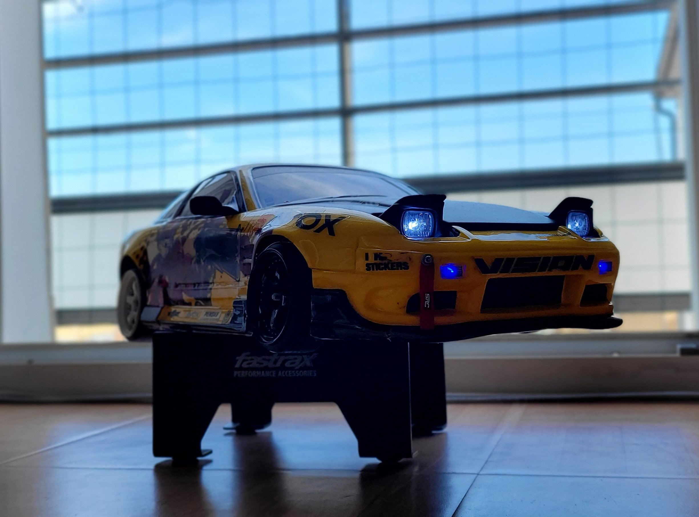

Menu
Accueil
Drift
YD2R-PLUS
RMX 2.0S
Piste
Echelle 1/10
Yokomo YD2R-Plus

La plus grande caractéristique du YD-2R est le moteur monté sur le porte-à-faux arrière. Il s'agit d'une machine de haute qualité équipée du châssis populaire en carbone, de l'amortisseur à huile SLF en aluminium, des tours d'amortisseur avant et arrière en aluminium.
Moteur :
Hobbywing Xerun V10 G3 10.5T Sensored
Variateur :
Skyrc Toro TS 120
Servo :
Rêve D RS-ST
Gyroscope :
Power HD SG
Carroserie :
Pandora RC 180SX
+
Sticker Little Car Addict
+
Kit Retractable Light
Pneus + jantes :
Rêve D
,
Jantes DS Racing noir à l'avant blanche à l'arrière
MST RMX 2.0S
La RMX 2.0 S grâce à sa conception bien pensée permet des vitesses de dérive plus élevées et assure un comportement de direction très simple mais efficace.
Moteur : Hobbywing Xerun V10 G2 10.5T Sensored
Variateur :
Hobbywing 10BL120
Servo :
OMG D1-10S
Gyroscope :
Yokomo YG-302
Pneus + jantes :
MST Carpet
,
Jantes DS Racing noir à l'avant blanche à l'arrière